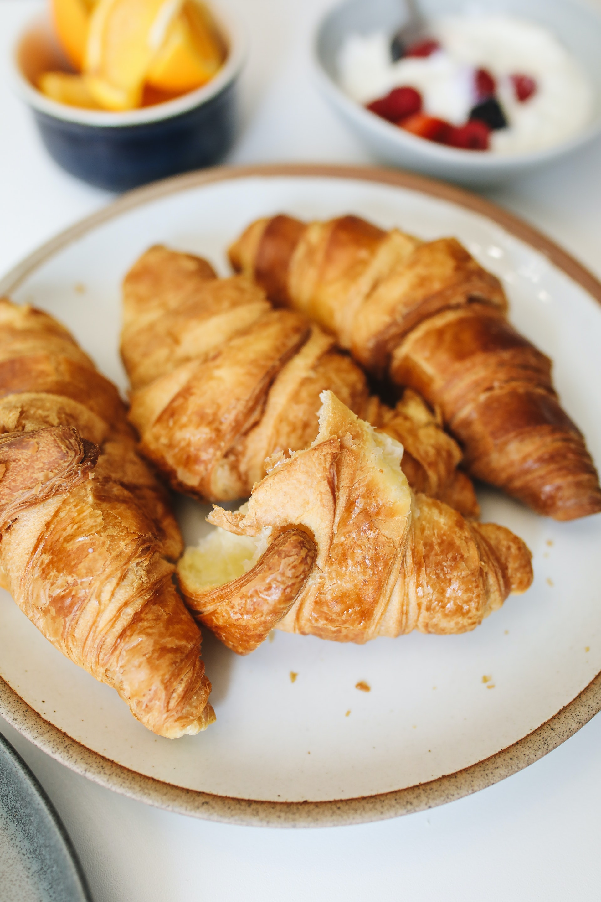

Französische Croissants
15 Min.
simpel
09.07.2020
Zutaten für
Zubereitung
Gesamtzeit ca. 15 Minuten
Alle Zutaten in eine Schale mischen und ca. 5-10 min umrühren (am besten mit einer Rührmaschine).
Den fertigen Teig in gleichgroße Bälle formen. Etwas Mehl auf die Arbeitsfläche geben und die Bälle in flache Dreiecke drücken und formen. Nun von der längsten Dreiecksseite hin zur Spitze aufrollen. Fertig ist das Croissant!
Ofen auf 180°C vorheizen und Backpapier auf ein Bleck auslegen. Nun etwas vom zusätzlichen Mehl auf das Backpapier geben. Die Croissants auslegen und nach 10-20 Min. (Ober-Unterhitze) aus dem Ofen nehmen. Bon appétit!
Den fertigen Teig in gleichgroße Bälle formen. Etwas Mehl auf die Arbeitsfläche geben und die Bälle in flache Dreiecke drücken und formen. Nun von der längsten Dreiecksseite hin zur Spitze aufrollen. Fertig ist das Croissant!
Ofen auf 180°C vorheizen und Backpapier auf ein Bleck auslegen. Nun etwas vom zusätzlichen Mehl auf das Backpapier geben. Die Croissants auslegen und nach 10-20 Min. (Ober-Unterhitze) aus dem Ofen nehmen. Bon appétit!
Rezept erstellt von
Kai